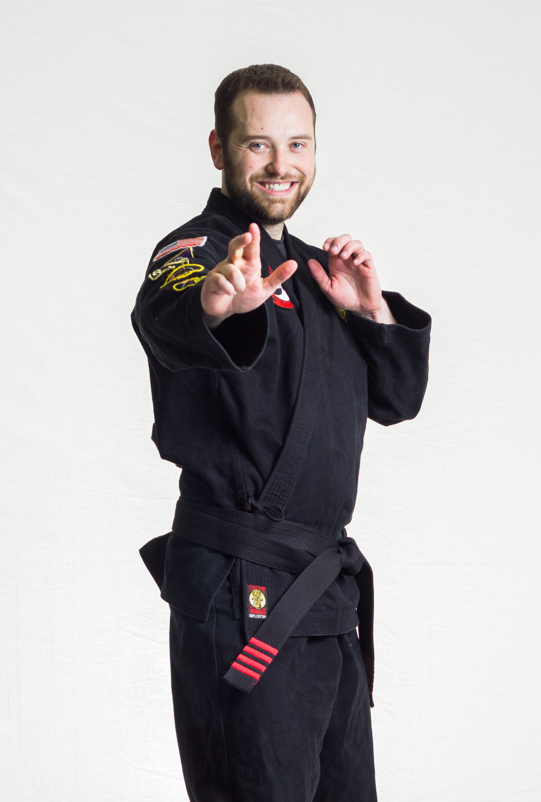
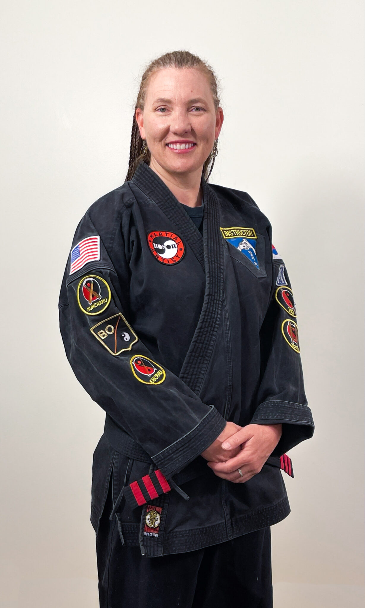
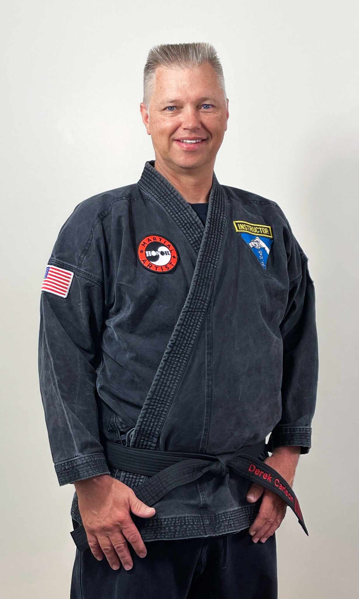
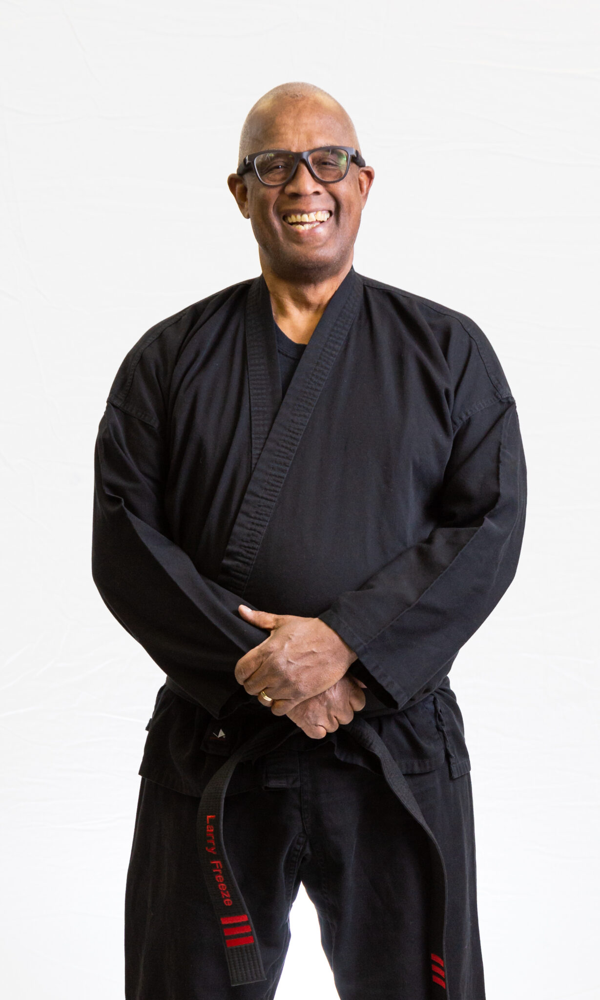
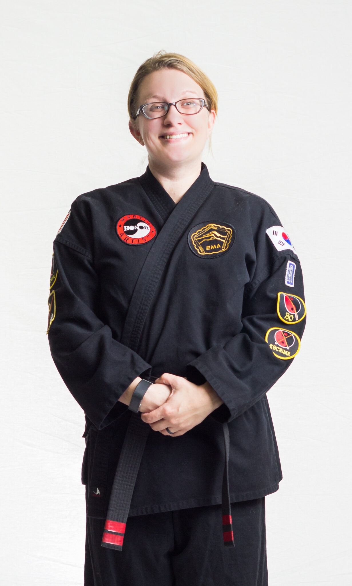
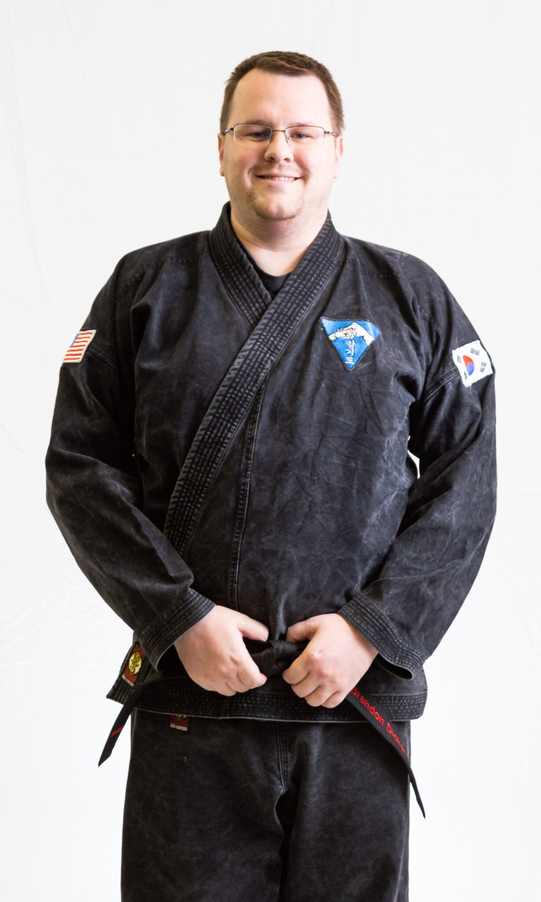

Meet our instructors
Curtis Taylor
I am the owner and head instructor of Curtis' Martial Arts. I was born in Layton and currently live
in
Syracuse. Since I was a child, I have always had a fascination with martial arts. I loved watching The
Karate Kid, The 3 Ninjas, Teenage Mutant Ninja Turtles, Mortal Kombat and any other Martial Arts
movies
I could get my hands on. I began practicing Martial Arts in 2002 under Sensei Al Martinez where I was
taught Shotokan Karate and Brazilian Jiu-Jitsu. After two years, Sensei Martinez was deployed to the
United Arab Emirates to serve in the Air Force. My search for a new martial arts school concluded at
Keith's Martial Arts in 2004 where I practiced under Keith Stockwell. In 2006 Erik Waller became the
new
instructor and our name was changed to Erik's Martial Arts. In 2007 I first earned my Blackbelt (1st
Dan) and I am currently 5th Dan (5th degree Blackbelt). Ever since I became a Blackbelt I had realized
that I had a passion for teaching and loved teaching classes whenever I was needed. I continue to
teach
and learn every day, and I love to watch my students grow in both skill and confidence.
In my personal life, I graduated from the University of Utah with a BS in Computer Science in 2011. I
married my wife Jessica in 2012, and we now have two children, Owen and Evelyn. Aside from running the
studio, I work for a DoD contractor writing embedded software for a variety of systems. My hobbies
include martial arts (obviously), weightlifting, photography, fixing and building things around the
house, playing video games, watching movies, and spending time with my family.
Stephanie Carlson
I began martial arts training in Kenpo and the Japanese art form Wado-ryu at the University of Utah. I moved to West Haven in 1998 and soon thereafter started studying Hap-Ki-Do. I earned my 4th Dan March 2022. I have a degree in Education - Communication Disorders, Family & Child Development, and Recreation & Leisure. I have been a City Council member, emergency manager, and a small business owner.
Derek Carlson
My first experience with martial arts was a Kenpo class in 1991 at the University of Utah. I really liked learning martial arts but felt awkward and intimidated by the instructors of that class. I joined Erik's Martial Arts in 2007 and trained under Erik Waller and Clint Drysdale. That experience was so much better. They were always thoughtful, and patient with their students. I always felt comfortable, valued, and able to work within my abilities and potential. I strive to have a similar approach in my teaching. I earned my black belt 11/20/2009 and progressed through the rank of 2nd Dan with Erik. Now I am a 4th Dan and learn from Curtis and like the mix of different styles that we practice. I love being an instructor and teaching at CMA. I get excited when I see students learning and progressing in their knowledge and confidence. I value learning martial arts for fitness, flexibility, coordination, self esteem, and self defense.
Larry Freeze
I started Hap Ki Do at the tender age of 59. I have been doing it for 13 years. Being involved in Hap Ki Do is one of the best decisions I have made. It has given me the confidence I never had. I love teaching the Kids Class. There is nothing like seeing the light go on when they are able to do something new.
Bryanna Gist
I began martial arts by taking Tae-Kwon-Do for a year and a half on Hill AFB in my early teens, but
had
to quit when my family moved off of the base and it was no longer feasible to attend. I picked up
Hap-Ki-Do a few years later when I attended Weber State University and shortly after taking all the
three semester courses I could, I found Curtis' Martial Arts in late 2008. I received my first degree
Blackbelt in February 2011, and my second degree in May 2013.
I have been teaching the Thursday night kids class since 2011. I love teaching these kids, watching
their skills grow, and getting to have a little fun while we learn. I believe martial arts helps
instill
confidence and discipline that carries outside of the martial arts studio.
Brandon Dickerson
I started Martial Arts in 2004 at this location that is now Curtis' Martial Arts. In 2008 I earned my
Blackbelt (1st Dan) and left in 2009. I returned in 2011 and attended as much as possible when work
and
school would permit. I have enjoyed every single class, and appreciate the detail to form, technique,
principles and overall real-life application to everything that I have learned. One of the parts I
have
had a lot of fun learning is the weapons and practicing getting the weapons patches. This has
motivated
and helped me to get better insights of some techniques and principles that we learn here.
I have taught the Friday classes since November 2017 where I've enjoyed and learned more with each
class. I love seeing the students learn and progress here and I am grateful to be able to help
contribute a part toward their success.